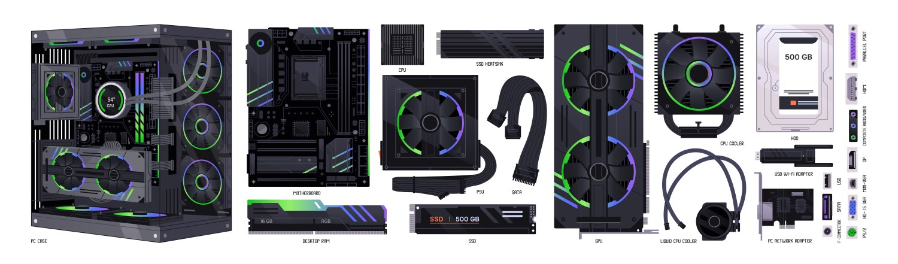
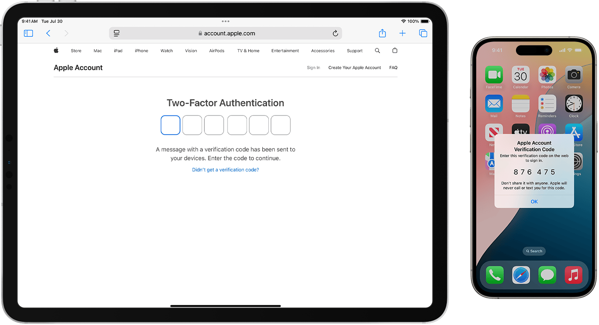
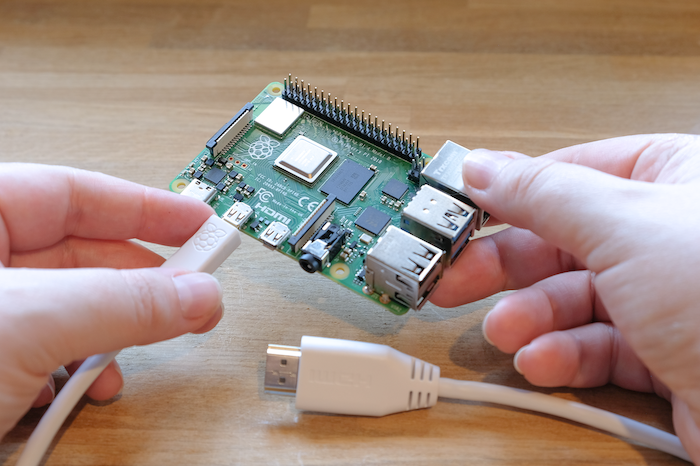

<style>
    /* --- STYLES FOR GUIDES TAB --- */
    .article-container {
        max-width: 800px;
        margin: 0 auto;
        padding: 20px 0px;
        background-color: transparent;
        border-radius: 12px;
        box-shadow: none;
    }
    .article-container h1, .article-container h2, .article-container h3 {
        font-weight: 700;
        line-height: 1.3;
        color: #1a202c;
        margin-top: 1.5em;
        margin-bottom: 0.8em;
    }
    .article-container h1 {
        font-size: 2.25rem;
        text-align: center;
        border-bottom: 2px solid #e2e8f0;
        padding-bottom: 0.5em;
        margin-top: 0;
    }
    .article-container h2 {
        font-size: 1.75rem;
    }
    .article-container h3 {
        font-size: 1.25rem;
        color: #2d3748;
    }
    .article-container p, .article-container li {
        font-size: 1rem;
        color: #4a5568;
    }
    .article-container strong {
        color: #2d3748;
        font-weight: 600;
    }
    .article-container a {
        color: #007bff;
        text-decoration: none;
        font-weight: 600;
    }
    .article-container a:hover {
        text-decoration: underline;
    }
    .article-image {
        width: 100%;
        height: auto;
        border-radius: 8px;
        margin: 20px 0;
        box-shadow: 0 4px 15px rgba(0,0,0,0.08);
    }
    .article-container figcaption {
        text-align: center;
        font-size: 0.85rem;
        color: #718096;
        margin-top: -10px;
        margin-bottom: 20px;
    }
    .article-container ul {
        padding-left: 20px;
    }
    .article-container li {
        margin-bottom: 0.5em;
    }
    .article-container hr {
        border: none;
        height: 1px;
        background-color: #e2e8f0;
        margin: 40px 0;
    }
    .intro-text {
        font-size: 1.1rem;
        color: #4a5568;
        text-align: center;
        margin-bottom: 2em;
    }
    .article-container table {
        width: 100%;
        border-collapse: collapse;
        margin: 25px 0;
        font-size: 0.9em;
        border-radius: 8px;
        overflow: hidden;
        box-shadow: 0 4px 15px rgba(0,0,0,0.05);
    }
    .article-container table thead tr {
        background-color: #007bff;
        color: #ffffff;
        text-align: left;
        font-weight: bold;
    }
    .article-container table th, .article-container table td {
        padding: 12px 15px;
    }
    .article-container table tbody tr {
        border-bottom: 1px solid #dddddd;
    }
    .article-container table tbody tr:nth-of-type(even) {
        background-color: #f3f3f3;
    }
    .article-container table tbody tr:last-of-type {
        border-bottom: 2px solid #007bff;
    }
    .final-quote {
        text-align: center;
        font-style: italic;
        font-size: 1.1rem;
        color: #4a5568;
        margin-top: 40px;
        padding: 20px;
        border-top: 2px solid #e2e8f0;
    }
    .code-block {
        background-color: #f1f1f1;
        padding: 5px 10px;
        border-radius: 4px;
        font-family: monospace;
    }
</style>
<main class="article-container">
    <h1>The Modern Guide to Digital Independence</h1>
    <p class="intro-text">
        Welcome! This guide explores essential topics for today's tech-savvy user, from understanding current hardware prices to taking back control of your data. Learn how to secure your digital life and build a private, powerful home computing setup.
    </p>

    <article id="hardware-prices">
        <h2>💰 Computer Hardware Pricing Guide (October 2025)</h2>
        <p>Whether you're building a new PC, upgrading an old one, or setting up a home server, knowing the current market prices is key. Here are some estimated prices for common components as of October 2025. <em>(Note: Prices are in USD and can fluctuate based on retailer and availability.)</em></p>
        
        <figure>
            
            <figcaption>Key components for any PC build or upgrade.</figcaption>
        </figure>

        <h3>Processors (CPU)</h3>
        <table>
            <thead>
                <tr>
                    <th>Category</th>
                    <th>Model</th>
                    <th>Estimated Price</th>
                </tr>
            </thead>
            <tbody>
                <tr>
                    <td>Budget Gaming/Workstation</td>
                    <td>Intel Core i5-14600K</td>
                    <td>¢2,438.99 - $2,865.81</td>
                </tr>
                <tr>
                    <td>Budget Gaming/Workstation</td>
                    <td>AMD Ryzen 5 7600X</td>
                    <td>¢2,438.99 - ¢2,804.83</td>
                </tr>
                <tr>
                    <td>High-end Gaming/Creation</td>
                    <td>Intel Core i9-14900K</td>
                    <td>¢5,487.72 - ¢6,707.21</td>
                </tr>
                <tr>
                    <td>High-end Gaming/Creation</td>
                    <td>AMD Ryzen 9 7950X</td>
                    <td>¢6,097.47 - ¢7,926.71</td>
                </tr>
            </tbody>
        </table>
        
        <h3>Graphics Cards (GPU)</h3>
        <table>
            <thead>
                <tr>
                    <th>Category</th>
                    <th>Model</th>
                    <th>Estimated Price</th>
                </tr>
            </thead>
            <tbody>
                <tr>
                    <td>Budget Gaming</td>
                    <td>AMD RX 6500 XT</td>
                    <td>¢1,829.24 - ¢2,195.088</td>
                </tr>
                <tr>
                    <td>Budget Gaming</td>
                    <td>Nvidia GTX 1660 Super</td>
                    <td>¢2,438.99 - ¢3,048.73</td>
                </tr>
                <tr>
                    <td>Mid-range Gaming</td>
                    <td>AMD RX 7600</td>
                    <td>¢3,048.73 - ¢3,658.48</td>
                </tr>
                 <tr>
                    <td>Mid-range Gaming</td>
                    <td>Nvidia RTX 4060</td>
                    <td>¢3,658.48 - ¢4,268.23</td>
                </tr>
                <tr>
                    <td>High-end Gaming/AI</td>
                    <td>AMD RX 7900 XTX</td>
                    <td>¢10,975.44 - ¢12,194.93</td>
                </tr>
                <tr>
                    <td>High-end Gaming/AI</td>
                    <td>Nvidia RTX 4080</td>
                    <td>¢13,414.43 - ¢14,633.92</td>
                </tr>
                <tr>
                    <td>Enthusiast Gaming/AI</td>
                    <td>Nvidia RTX 4090</td>
                    <td>¢19,511.89 - ¢24,389.87</td>
                </tr>
            </tbody>
        </table>

        <h3>Memory (RAM)</h3>
        <table>
            <thead>
                <tr>
                    <th>Type</th>
                    <th>Capacity</th>
                    <th>Estimated Price</th>
                </tr>
            </thead>
            <tbody>
                <tr>
                    <td>DDR4 (Older)</td>
                    <td>16GB (2x8GB)</td>
                    <td>¢487.8 - ¢731.7</td>
                </tr>
                <tr>
                    <td>DDR4 (Older)</td>
                    <td>32GB (2x16GB)</td>
                    <td>¢853.65 - ¢1,219.49</td>
                </tr>
                <tr>
                    <td>DDR5 (Newer)</td>
                    <td>16GB (2x8GB)</td>
                    <td>¢731.7 - ¢975.59</td>
                </tr>
                <tr>
                    <td>DDR5 (Newer)</td>
                    <td>32GB (2x16GB)</td>
                    <td>¢1,219.49 - ¢1,707.29</td>
                </tr>
                <tr>
                    <td>DDR5 (Newer)</td>
                    <td>64GB (2x32GB)</td>
                    <td>¢2,438.99 - ¢3,414.58</td>
                </tr>
            </tbody>
        </table>
        
        <h3>Storage Drives</h3>
        <table>
            <thead>
                <tr>
                    <th>Type</th>
                    <th>Capacity</th>
                    <th>Estimated Price</th>
                </tr>
            </thead>
            <tbody>
                <tr>
                    <td>NVMe SSD</td>
                    <td>500GB</td>
                    <td>¢426.82 - ¢609.75</td>
                </tr>
                <tr>
                    <td>NVMe SSD</td>
                    <td>1TB</td>
                    <td>¢609.75 - ¢853.65</td>
                </tr>
                <tr>
                    <td>NVMe SSD</td>
                    <td>2TB</td>
                    <td>¢1,219.49 - ¢1,829.24</td>
                </tr>
                <tr>
                    <td>NVMe SSD</td>
                    <td>4TB</td>
                    <td>¢2,438.99 - ¢3,658.48</td>
                </tr>
                <tr>
                    <td>Hard Drive (HDD)</td>
                    <td>4TB</td>
                    <td>¢975.59 - ¢1,219.49</td>
                </tr>
                <tr>
                    <td>Hard Drive (HDD)</td>
                    <td>8TB</td>
                    <td>¢1,829.24 - ¢2,195.088</td>
                </tr>
                <tr>
                    <td>Hard Drive (HDD)</td>
                    <td>12TB</td>
                    <td>¢2,438.99 - ¢3,048.73</td>
                </tr>
            </tbody>
        </table>
        
        <h3>Network Equipment</h3>
        <table>
            <thead>
                <tr>
                    <th>Device</th>
                    <th>Type / Speed</th>
                    <th>Estimated Price</th>
                </tr>
            </thead>
            <tbody>
                <tr>
                    <td>Wi-Fi Router</td>
                    <td>Budget Wi-Fi 6</td>
                    <td>¢609.75 - ¢975.59</td>
                </tr>
                <tr>
                    <td>Wi-Fi Router</td>
                    <td>Mid-range Wi-Fi 6E</td>
                    <td>¢1,829.24 - ¢3,048.73</td>
                </tr>
                <tr>
                    <td>Wi-Fi Router</td>
                    <td>High-end Wi-Fi 7</td>
                    <td>¢3,658.48 - ¢6,097.47</td>
                </tr>
                <tr>
                    <td>Network Switch</td>
                    <td>5-port Gigabit</td>
                    <td>¢158.53 - ¢304.87</td>
                </tr>
                <tr>
                    <td>Network Switch</td>
                    <td>8-port Gigabit</td>
                    <td>¢304.87 - ¢609.75</td>
                </tr>
                <tr>
                    <td>Network Switch</td>
                    <td>24-port Enterprise</td>
                    <td>¢3,658.48 - ¢12,194.93</td>
                </tr>
            </tbody>
        </table>
    </article>

    <hr>

    <article id="2fa-security">
        <h2>🔒 Why Two-Factor Authentication Is Essential</h2>
        <p>In today's digital world, a password alone is not enough to protect your valuable accounts. Two-Factor Authentication (2FA) is one of the most effective steps you can take to secure your online identity.</p>

        <figure>
            
            <figcaption>2FA adds a critical second layer of security to your accounts.</figcaption>
        </figure>

        <h3>What Is Two-Factor Authentication?</h3>
        <p>2FA is like having two locks on your front door. Even if a thief steals your key (your password), they still can't get in without the second key. This second "factor" is something only you have access to.</p>

        <h3>How Does It Work?</h3>
        <p>When you log into an account with 2FA enabled:</p>
        <ol>
            <li>You enter your password (something you <strong>know</strong>).</li>
            <li>You provide a second proof of identity (something you <strong>have</strong>).</li>
        </ol>
        <p>This second proof can be:</p>
        <ul>
            <li>A code sent to your phone via text (SMS).</li>
            <li>A time-sensitive code from an authenticator app (like Google Authenticator or Authy).</li>
            <li>A physical tap from a security key (like a YubiKey).</li>
            <li>A biometric scan (fingerprint or face).</li>
        </ul>
        
        <h3>Why You Absolutely Need It</h3>
        <p>Passwords are no longer sufficient. They can be stolen in data breaches, guessed by brute-force attacks, or phished through deceptive emails. With 2FA, even if a hacker has your password, they are stopped cold because they don't have your phone or security key.</p>
        
        <h3>Common Types of 2FA (From Least to Most Secure)</h3>
        <ol>
            <li><strong>SMS Text Messages:</strong> Easy to set up and better than nothing, but vulnerable to SIM-swapping attacks.</li>
            <li><strong>Authenticator Apps:</strong> Much more secure than SMS. They generate codes on your device and work without cell service. <strong>This is the recommended method for most people.</strong></li>
            <li><strong>Physical Security Keys:</strong> The gold standard. These are small USB devices that are immune to phishing and remote attacks. Best for high-value accounts like email and finances.</li>
        </ol>
        
        <h3>How to Get Started</h3>
        <ol>
            <li>Go to the security settings of your important accounts (Email, Banking, Social Media).</li>
            <li>Look for an option called "Two-Factor Authentication," "2-Step Verification," or "Login Approval."</li>
            <li>Follow the on-screen instructions to set it up, preferably using an authenticator app.</li>
            <li><strong>Crucially, save your backup codes</strong> in a safe place (like a password manager or a printed document). These will let you back into your account if you lose your phone.</li>
        </ol>
        <p>A few extra seconds at login is a tiny price to pay for peace of mind and the prevention of a catastrophic account takeover.</p>
    </article>

    <hr>
    
    <article id="local-services-intro">
        <h2>🏠 The Power of Local Computing: Your Data, Your Rules</h2>
        <p>In an era of endless subscriptions and data privacy concerns, running services on your own hardware at home is becoming increasingly popular. It offers a powerful combination of privacy, cost savings, and control. Below are some of the most valuable services you can run locally.</p>

        <figure>
            
            <figcaption>A home server can be anything from an old PC to dedicated hardware.</figcaption>
        </figure>
    </article>

    <section id="media-server">
        <h3>🎬 Media Server (Plex, Jellyfin)</h3>
        <p><strong>What it is:</strong> Your personal, self-hosted Netflix and Spotify. You store your movies, TV shows, and music on your own computer and stream them to any device, anywhere.</p>
        <ul>
            <li><strong>Own Your Content:</strong> No more shows disappearing from streaming services.</li>
            <li><strong>Better Quality:</strong> Stream high-bitrate, uncompressed files for the best picture and sound.</li>
            <li><strong>No Subscriptions:</strong> After the initial hardware cost, it's free.</li>
            <li><strong>Total Privacy:</strong> No one tracks what you watch.</li>
        </ul>
        <p><strong>Popular Software:</strong> <a href="#">Plex</a> (easy for beginners), <a href="#">Jellyfin</a> (completely free and open source).</p>
    </section>

    <section id="ai-server">
        <h3>🤖 AI Server (LM Studio, Ollama)</h3>
        <p><strong>What it is:</strong> Instead of sending your prompts to services like ChatGPT, you run powerful AI language models on your own computer.</p>
        <ul>
            <li><strong>Complete Privacy:</strong> Your conversations and documents never leave your house. Perfect for sensitive work.</li>
            <li><strong>No Costs or Limits:</strong> Use the AI as much as you want with no monthly fees.</li>
            -<strong>Works Offline:</strong> Your AI assistant is always available, even without an internet connection.</li>
            <li><strong>No Censorship:</strong> Full control over the models and their responses.</li>
        </ul>
        <p><strong>Hardware Note:</strong> This is more demanding and benefits greatly from a modern graphics card (GPU) with at least 12GB of VRAM.</p>
    </section>
    
    <section id="password-manager">
        <h3>🔑 Password Manager (Vaultwarden)</h3>
        <p><strong>What it is:</strong> A server that stores all your encrypted passwords on your own device instead of a third-party cloud.</p>
        <ul>
            <li><strong>Ultimate Security:</strong> You are the only one with access to your password vault.</li>
            <li><strong>Cost-Effective:</strong> Avoid recurring subscription fees from commercial providers.</li>
            <li><strong>How to start:</strong> <a href="#">Vaultwarden</a> is a lightweight and popular choice that is compatible with Bitwarden apps.</li>
        </ul>
    </section>

    <section id="cloud-storage">
        <h3>☁️ Cloud Storage (Nextcloud, Syncthing)</h3>
        <p><strong>What it is:</strong> Your own personal Dropbox or Google Drive.</p>
        <ul>
            <li><strong>Massive Storage:</strong> Your only limit is the size of your hard drives. Turn a ¢1,829.24 8TB drive into your private cloud.</li>
            <li><strong>Data Ownership:</strong> Your files are yours alone. No one is scanning them for marketing purposes.</li>
            <li><strong>Sync Across Devices:</strong> Keep files synchronized between your phone, laptop, and desktop seamlessly.</li>
        </ul>
    </section>

    <section id="ad-blocker">
        <h3>🛡️ Network-Wide Ad Blocker (Pi-hole)</h3>
        <p><strong>What it is:</strong> A tool that blocks ads, trackers, and malicious domains for <strong>every single device</strong> on your home network.</p>
        <ul>
            <li><strong>Block Everywhere:</strong> Works on smart TVs, phones, and tablets where you can't install ad blockers.</li>
            <li><strong>Faster Internet:</strong> Your devices don't waste bandwidth downloading ads.</li>
            <li><strong>Enhanced Privacy:</strong> Stops trackers from monitoring your online activity.</li>
        </ul>
    </section>
    
    <section id="photo-backup">
        <h3>📸 Family Photo Backup (Immich, PhotoPrism)</h3>
        <p><strong>What it is:</strong> Your personal Google Photos replacement that runs at home.</p>
        <ul>
            <li><strong>Unlimited Storage:</strong> Never pay for cloud storage again. Just add more hard drives as your collection grows.</li>
            <li><strong>Complete Privacy:</strong> Your family's memories are for your eyes only.</li>
            <li><strong>Powerful Features:</strong> Modern solutions use AI for face recognition, object detection, and map views.</li>
        </ul>
    </section>
    
    <hr>
    
    <article id="getting-started">
        <h2>🎯 Getting Started: Your Path to Digital Control</h2>
        <p>Jumping into self-hosting can seem daunting, but it's easier than ever. You don't need to do everything at once. Start small and build your confidence.</p>

        <figure>
            
            <figcaption>Start with a small, manageable project and grow from there.</figcaption>
        </figure>

        <h3>Recommended First Steps for Beginners:</h3>
        <ol>
            <li><strong>Start with a Media Server:</strong> Use an old computer you already have and install <a href="#">Plex</a>. It's a fantastic weekend project that provides immediate, tangible benefits.</li>
            <li><strong>Set Up an Ad Blocker:</strong> Get a Raspberry Pi and install <a href="#">Pi-hole</a>. This simple device will improve the internet experience for your entire household.</li>
            <li><strong>Secure Your Passwords:</strong> Once you're comfortable, try setting up <a href="#">Vaultwarden</a>. This is a huge win for your personal security.</li>
        </ol>

        <h3>Key Benefits to Remember:</h3>
        <ul>
            <li><strong>Independence:</strong> You are not reliant on corporations staying in business, changing their prices, or respecting your privacy.</li>
            <li><strong>Privacy:</strong> Your data stays in your home, shielded from data breaches and surveillance.</li>
            <li><strong>Cost Savings:</strong> A one-time hardware investment replaces years of compounding subscription fees. Over 3 years, you could easily save over ¢12,194.93 that would have gone to streaming, storage, and AI services.</li>
            <li><strong>Learning:</strong> You will gain invaluable skills in networking, system administration, and how technology truly works.</li>
        </ul>
        
        <p class="final-quote">
            The future of technology doesn't have to mean giving up control of your data. With a modest investment and a little learning, you can take charge of your digital life.
        </p>
    </article>
</main>
